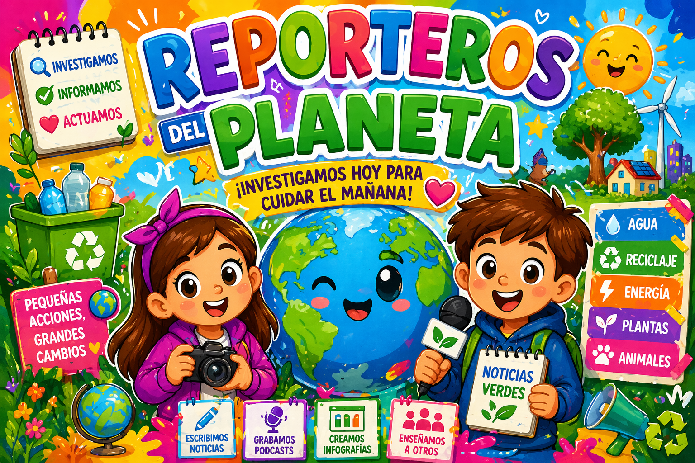

BIENVENIDOS REPORTEROS DEL PLANETA

¡ Bienvenidos reporteros y reporteras!.Tenemos una misión importante. Debemos investigar como cuidar nuestro planeta, y contar a todo el mundo que podemos hacer para ayudarlo.
En los últimos tiempos, la Tierra nos está enviado señales de que necesita nuestra ayuda: hay demasiada basura en algunos lugares, se desperdicia mucha agua, se contaminan los mares y el aire y muchos animales y plantas necesitan protección.
Por eso, vosotros seréis un equipo especial de periodistas. Tendréis que observar, buscar información y grabar un podcast para mostrar y enseñar a los demás como podemos cuidar de nuestro entorno.
Nuestra misión, será descubrir, que con pequeños gestos y acciones cada día, podemos conseguir grandes cambios para el planeta.
¿Estáis preparados para convertiros en auténticos REPORTEROS DEL PLANETA?